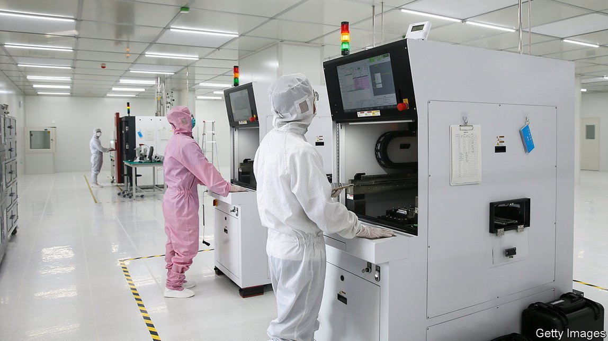

2021-09-20T13:08:50+00:00
Home comforts
在家千般好
在家千般好
China turns to new stock exchanges to channel finance to innovative firms
中国设立新交易所为创新企业融资
中國設立新交易所為創新企業融資
As foreign listings become harder to pull off, Xi Jinping hopes to make domestic ones easier
随着海外上市愈加困难，习近平希望为国内上市提供便利
隨着海外上市愈加困難，習近平希望為國內上市提供便利

CHINA’S ECONOMIC planners want more home-made semiconductors, but they are not satisfied with more chips simply being produced at home. They want to bring the entire supply chain—from raw materials and chip grinders to labour and capital—onshore. Tens of thousands of companies have established microchip businesses over the past year. Now the state is rushing to ensure such cash-hungry firms can raise capital at home, too.
中国的经济规划者希望提高半导体国产化水平，但他们并不满足于仅仅在国内生产更多芯片。他们想要把整个供应链——从原材料和芯片加工设备到劳动力和资本——都搬到国内。在过去的一年里，已有几万家企业建立起微芯片业务。现在政府正急于确保这些亟需资金的公司也能在国内融到钱。
中國的經濟規劃者希望提高半導體國產化水平，但他們並不滿足於僅僅在國內生產更多芯片。他們想要把整個供應鏈——從原材料和芯片加工設備到勞動力和資本——都搬到國內。在過去的一年裡，已有幾萬家企業建立起微芯片業務。現在政府正急於確保這些亟需資金的公司也能在國內融到錢。
On September 2nd Xi Jinping, China’s president, announced that a new stock exchange will be launched in Beijing, joining existing markets in Shanghai and Shenzhen. It is hoped that the bourse, a revamp of an over-the-counter exchange called the New Third Board, will channel capital from professional investors to fast-growing small and mid-sized firms.
国家主席习近平9月2日宣布，在上海和深圳的证券市场之外，将在北京设立新的证券交易所。该交易所将由场外交易市场“新三板”改造而来，希望能够引导专业投资者把资本投向快速成长的中小企业。
國家主席習近平9月2日宣布，在上海和深圳的證券市場之外，將在北京設立新的證券交易所。該交易所將由場外交易市場“新三板”改造而來，希望能夠引導專業投資者把資本投向快速成長的中小企業。
This is not the first time Mr Xi has backed a new stock exchange aimed at innovative companies: Shanghai’s STAR market opened in 2019, advertising relaxed rules that help accelerate fundraising for smaller firms. Domestic listings appear to be thriving. Shanghai will bag two of the world’s largest initial public offerings (IPOs) of the year, those of China Telecom, a state-owned communications company, and Syngenta, a state agrochemical giant. Funds raised through such offerings in the city are set to reach their highest level in a decade this year, according to Bloomberg.
这并非习近平第一次支持设立新的证券交易所来服务创新型企业：上海的科创板设立于2019年，宣称以更宽松的规则帮助规模较小的企业更快融资。目前国内的上市活动看起来热情高涨。今年全球最大的IPO中有两宗落户上海，分别是国有通信公司中国电信和国有农化巨头先正达。据彭博社报道，今年上海此类上市的融资额看来会达到10年来的最高点。
這並非習近平第一次支持設立新的證券交易所來服務創新型企業：上海的科創板設立於2019年，宣稱以更寬鬆的規則幫助規模較小的企業更快融資。目前國內的上市活動看起來熱情高漲。今年全球最大的IPO中有兩宗落戶上海，分別是國有通信公司中國電信和國有農化巨頭先正達。據彭博社報道，今年上海此類上市的融資額看來會達到10年來的最高點。
The emphasis on domestic fundraising fits snugly into China’s strategy of “dual circulation”, the cornerstone of the country’s latest five-year plan, which aims to bolster domestic markets and reduce reliance on foreign ones, often on national-security grounds. It also offsets the worsening environment for overseas listings. New domestic regulations make it harder for Chinese firms to list abroad: internet companies with more than 1m users, for example, must now apply to the cyberspace regulator for permission. In America, the securities watchdog has halted Chinese IPOs following several disastrous listings. Congress plans to force many Chinese groups to delist if they do not share certain auditing documents—ones that the Chinese state forbids them to reveal.
强调国内融资也非常契合中国的“双循环”战略，这是中国最新五年规划的基石，目标是提振国内市场，减少对外国市场的依赖——往往是出于国家安全的考虑。此举也能抵消海外上市环境不断恶化的影响。国内新规加大了中国公司在海外上市的难度，例如，用户超过100万的互联网公司现在必须首先向网络监管部门申请许可。美国的证券监管机构在几次灾难性的IPO发生后叫停了中国公司在美上市。国会计划对许多中国企业实行强制退市，除非它们提供某些审计文件——但中国政府禁止企业披露这些文件。
強調國內融資也非常契合中國的“雙循環”戰略，這是中國最新五年規劃的基石，目標是提振國內市場，減少對外國市場的依賴——往往是出於國家安全的考慮。此舉也能抵消海外上市環境不斷惡化的影響。國內新規加大了中國公司在海外上市的難度，例如，用戶超過100萬的互聯網公司現在必須首先向網絡監管部門申請許可。美國的證券監管機構在幾次災難性的IPO發生後叫停了中國公司在美上市。國會計劃對許多中國企業實行強制退市，除非它們提供某些審計文件——但中國政府禁止企業披露這些文件。
On the face of it, the roles of offshore and onshore IPOs seem to have reversed. An IPO in Hong Kong or New York was once seen as further removed from Beijing’s reach and less sensitive to policy surprises. The latest policy and geopolitical turmoil, however, has rocked overseas listings while making Chinese-traded securities “a route to counter geopolitical risks stemming from US sanctions”, say analysts at Natixis, a bank.
从表面上看，海外和国内IPO的角色似乎发生了对调。在香港或纽约上市曾一度被认为可以远离北京的监管，减少政策突变的影响。然而，最新的政策和地缘政治动荡动摇了海外上市的基础，同时也让在中国上市的证券成了“抵御源自美国制裁的地缘政治风险的一条途径”， 法国外贸银行（Natixis）的分析师表示。
從表面上看，海外和國內IPO的角色似乎發生了對調。在香港或紐約上市曾一度被認為可以遠離北京的監管，減少政策突變的影響。然而，最新的政策和地緣政治動蕩動搖了海外上市的基礎，同時也讓在中國上市的證券成了“抵禦源自美國制裁的地緣政治風險的一條途徑”， 法國外貿銀行（Natixis）的分析師表示。
Neither Hong Kong nor New York can offer such a defence. The Hang Seng Tech Index and Nasdaq Golden Dragon Index, both of which track some of China’s biggest listed tech groups, tumbled by 28% and 33%, respectively, between the end of June and late August, according to Natixis. By contrast, the STAR 50 index rose by 1.4% over the same period.
香港和纽约都无法提供这样的保障。根据法国外贸银行的数据，从6月底至8月底，追踪中国一些最大的上市科技集团的恒生科技指数和纳斯达克中国金龙指数分别暴跌了28%和33%。相比之下，科创50指数同期上涨了1.4%。
香港和紐約都無法提供這樣的保障。根據法國外貿銀行的數據，從6月底至8月底，追蹤中國一些最大的上市科技集團的恒生科技指數和納斯達克中國金龍指數分別暴跌了28%和33%。相比之下，科創50指數同期上漲了1.4%。
Channelling capital at the snap of a finger might be harder than regulators think, however. Many tech groups raise funds privately through offshore structures not recognised by China’s regulators. Part of the reason why Chinese tech companies listed abroad in the first place was because the foreign investments they took on made cashing out through an onshore IPO a regulatory minefield.
然而，想要一声令下就引导资本的流向可能比监管者以为的要难。许多科技集团通过未获中国监管机构认可的离岸架构开展非公开融资。中国科技公司之所以首先选择了在海外上市，原因之一就是它们已接受的外国投资如果想通过境内IPO变现退出，必然会面临一个监管雷区。
然而，想要一聲令下就引導資本的流向可能比監管者以為的要難。許多科技集團通過未獲中國監管機構認可的離岸架構開展非公開融資。中國科技公司之所以首先選擇了在海外上市，原因之一就是它們已接受的外國投資如果想通過境內IPO變現退出，必然會面臨一個監管雷區。
Mr Xi might launch all the new exchanges he wants, but he has neglected deeper reforms to their governance. The STAR market uses a “registration system” for IPOs whereby, in theory, companies need only meet a number of clear requirements to go public. In practice, however, the China Securities Regulatory Commission (CSRC) retains control over who goes public and when. A number of listings have been put on hold this year. The CSRC has a “civil-servant mentality” towards keeping markets orderly and avoiding unwanted social disturbances, says a manager at a global investment group. Regulators will be reluctant to shed that mindset, be they in Shenzhen, Shanghai or Beijing. ■
习近平想设立多少个新的交易所都可以，但他忽略了更深层次的对交易所治理的改革。科创板采用IPO“注册制”，理论上，公司只需满足若干明确的要求就可以上市。然而在实践中，中国证监会仍然掌控着谁能上市、何时上市的决定权。今年已有几家公司被暂缓上市。一家全球投资集团的管理者表示，中国证监会有一种“公务员心态”，一心维持市场秩序，避免不必要的社会动荡。无论是在深圳、上海，还是北京，监管者都会难以摆脱这种心态。
習近平想設立多少個新的交易所都可以，但他忽略了更深層次的對交易所治理的改革。科創板採用IPO“註冊制”，理論上，公司只需滿足若干明確的要求就可以上市。然而在實踐中，中國證監會仍然掌控着誰能上市、何時上市的決定權。今年已有幾家公司被暫緩上市。一家全球投資集團的管理者表示，中國證監會有一種“公務員心態”，一心維持市場秩序，避免不必要的社會動蕩。無論是在深圳、上海，還是北京，監管者都會難以擺脫這種心態。